Pio IX em Foco
Principal
Eventos
Historia
Noticias
Esportes
Pontos Turisticos
Os folguedos de Pio IX são manifestações culturais tradicionais que refletem a rica identidade do Piauí...
Capela dedicada a São Miguel, que foi levantada no sertão piononence, é um marco histórico e religioso de grande importância. Sua construção foi liderada por...
Desde outubro de 2022, a cidade de Pio IX, no Piauí, conta com uma unidade do Sesc Senac, marcando um importante avanço no desenvolvimento social e educacional...
São Luís é Finalista no Futebol Feminino!!!...
A Igreja na Praça Matriz de Pio IX é um marco histórico da cidade, com sua arquitetura única e eventos religiosos importantes ao longo do ano...